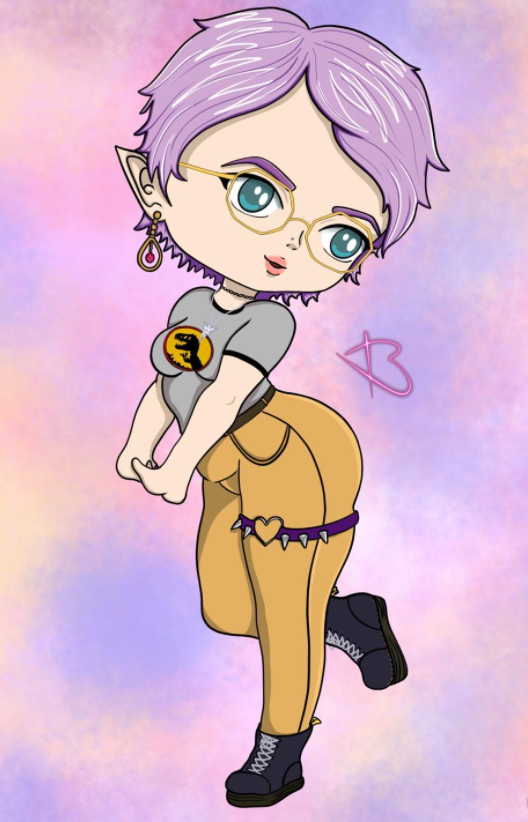

Anaïs Bossouw

Dévelopeur junior à Becode Charleroi
- Date de naissance : 7 Octobre 1994
- Adresse : Nivelles
- Adresse mail : anais.bossouw@gmail.com
Expériences professionnelles
- Ouvrière d'entretien mars 2021 - aout 2021
- Athenée Royale Jean Absil, Etterbeek
- Employée polyvalente en grande surface janv. 2020 - janv. 2021
- Ouvrière d'entretien à domicile mars 2019 - déc. 2019
- Employée service poissonnerie sept. 2015 - déc. 2018
- Carrefour Waterloo centre
Soft skills
Créative - Optimiste
Spontanée - Intuitive
Centres d'intérêts
- Lecture fantastique et science fiction
- Dessin sur tablette
- Jeux vidéos rétro
- Puzzles